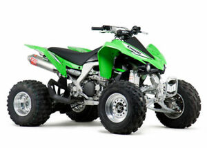

My whole life I have been interested in vehicles.
I first started out with working on cars when I first got my license.
After cars I got into atv's and started doing trail riding.
The atv shown above is a Yamaha YFZ 450.
This specific atv is used for mostly racing, but can be used for trail riding as well.
This atv is a kawasaki KFX 450.
Just like the Yamaha, this atv is used for racing, but is good for trails as well.
What makes this atv better for trails, is that it has a reverse gear.